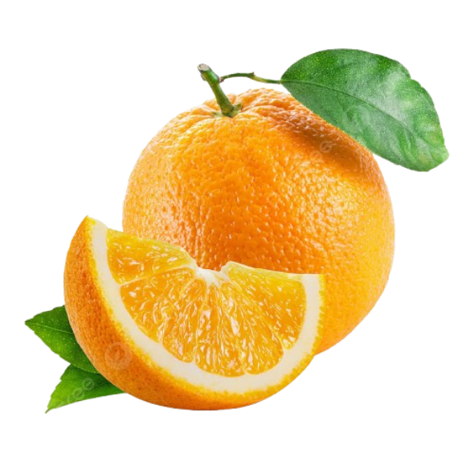
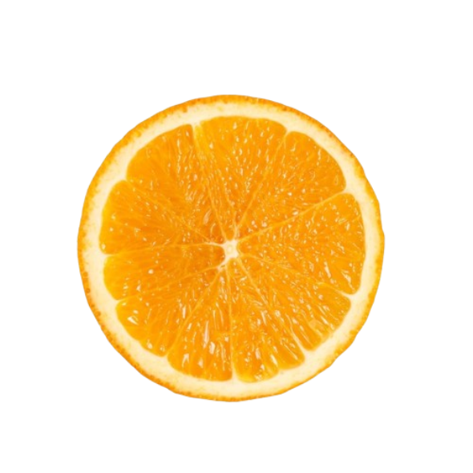
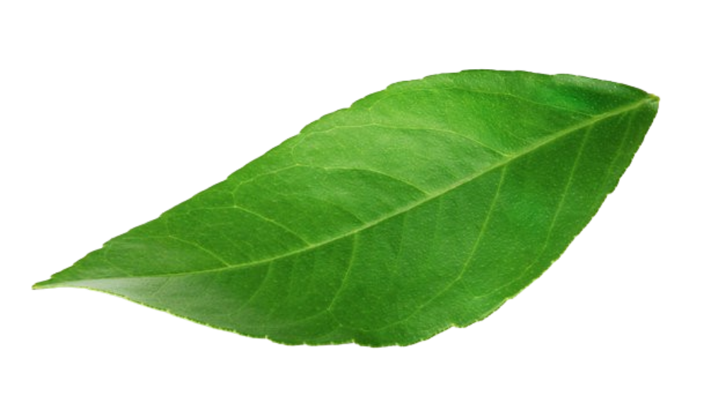
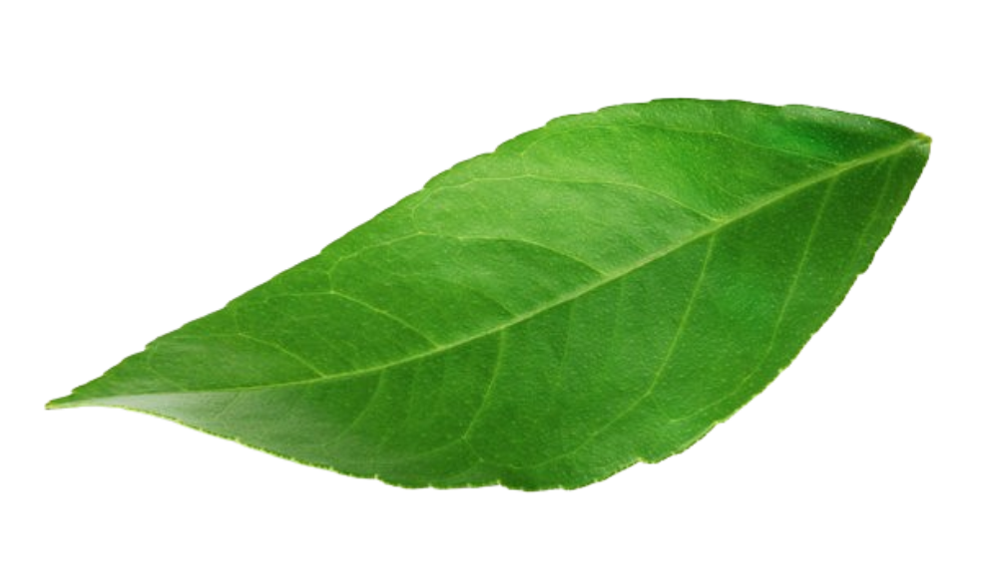
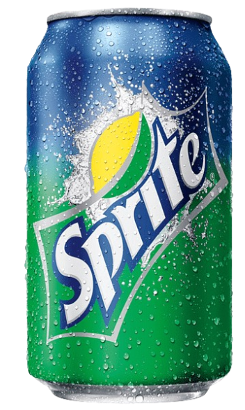
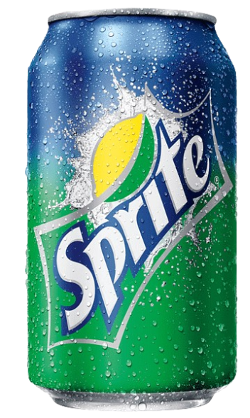

FANTA
  

Flavour Updated
Bright, bubbly and a popular favourite, Fanta Orange is a soft drink with a tingly, fruity taste. First introduced in 1940, Fanta is the second oldest brand of The Coca‑Cola Company.Bright, bubbly and instantly refreshing, Fanta is made with 100% natural flavors and is caffeine free.Fanta Orange Soda in India is the most popular orange-flavored soda. Made with Real Sugar, it has a clean but bright orange flavor, without being over sweet. Best enjoyed cold. Ingredients: Carbonated water, Sugar, Acidity regulator (330), Stabilizers (414, 445), Preservative (221).
 

SPRITE
FANTA